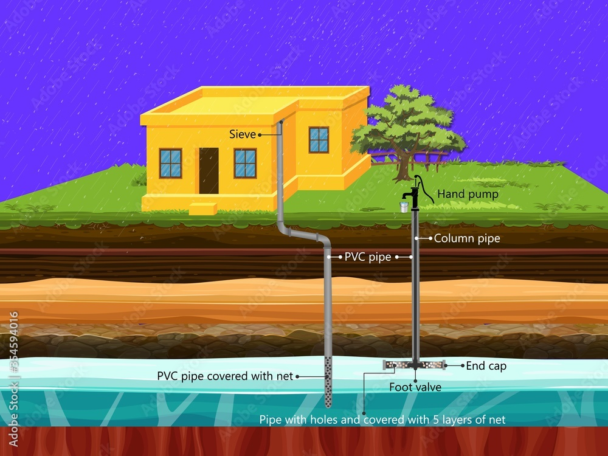
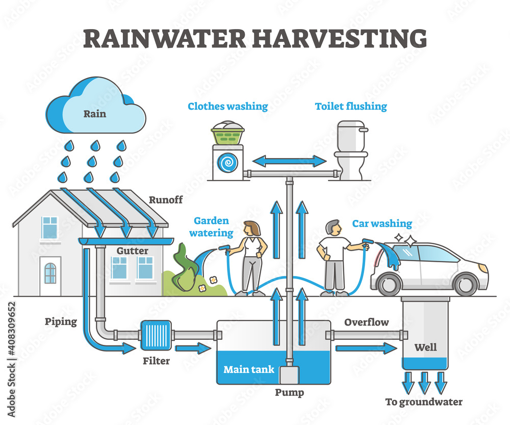
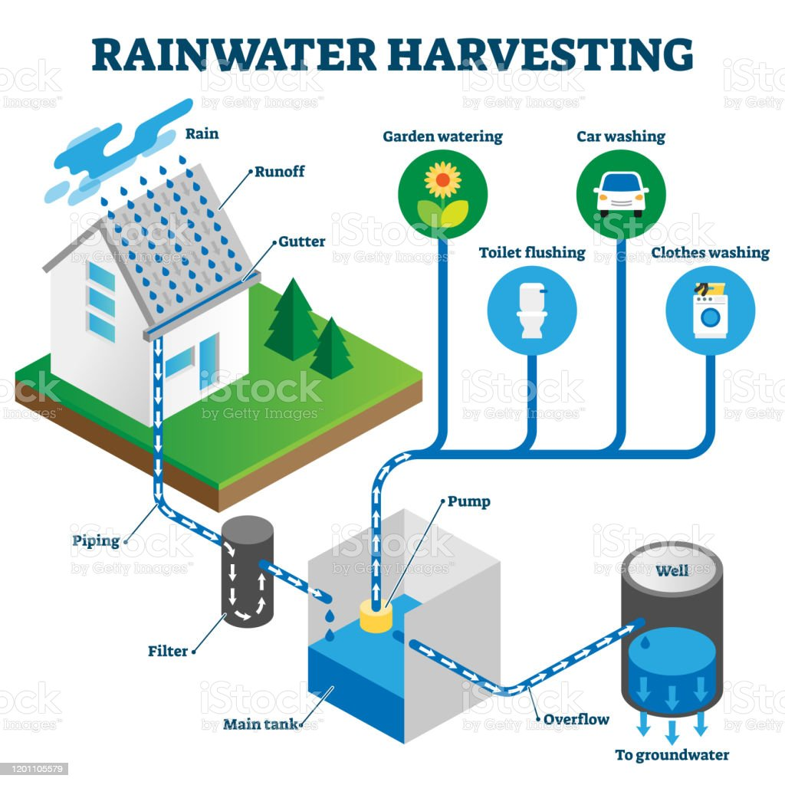

About Us
We are a team of experts in rainwater harvesting systems with a mission to spread awareness about the benefits of rainwater harvesting and its importance in water conservation.
Our website provides comprehensive information on different types of rainwater harvesting systems, their advantages and disadvantages, and how to choose the right system for your needs. We also provide step-by-step guides on how to install and maintain your rainwater harvesting system.
Rainwater Harvesting Systems
There are various types of rainwater harvesting systems, including...
- Roof catchment systems
- In-ground storage systems
- Above-ground storage systems
Each system has its own advantages and disadvantages. We provide detailed information on each system to help you choose the right one for your needs.
Our step-by-step guides on how to install and maintain your rainwater harvesting system will help you get started with your own system.
Rainwater Uses
Harvested rainwater can be used for a variety of purposes, including...
- Irrigation
- Flushing toilets
- Washing clothes
We provide tips for optimizing the use of rainwater in your home or business, as well as information on the best practices for using harvested rainwater safely.
Maintenance and Troubleshooting
Proper maintenance of your rainwater harvesting system is essential for its longevity and effectiveness. We provide information on how to maintain your system and troubleshoot common problems that may occur.
